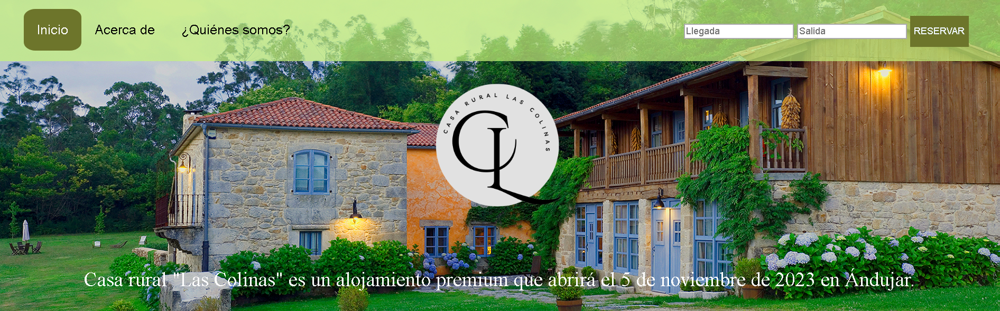

También podremos encontrar cerca del restaurante la Casa Rural Las Colinas.
Una gran casa rural con varios dormitorios y un gran patio exterior.
Allí también podremos ver algunas actividades al aire libre que se podrán hacer, como por ejemplo:
Ciclismo o pesca.
Haz CLICK en la imagen de abajo y entra en la página de la Casa Rural Las Colinas.
